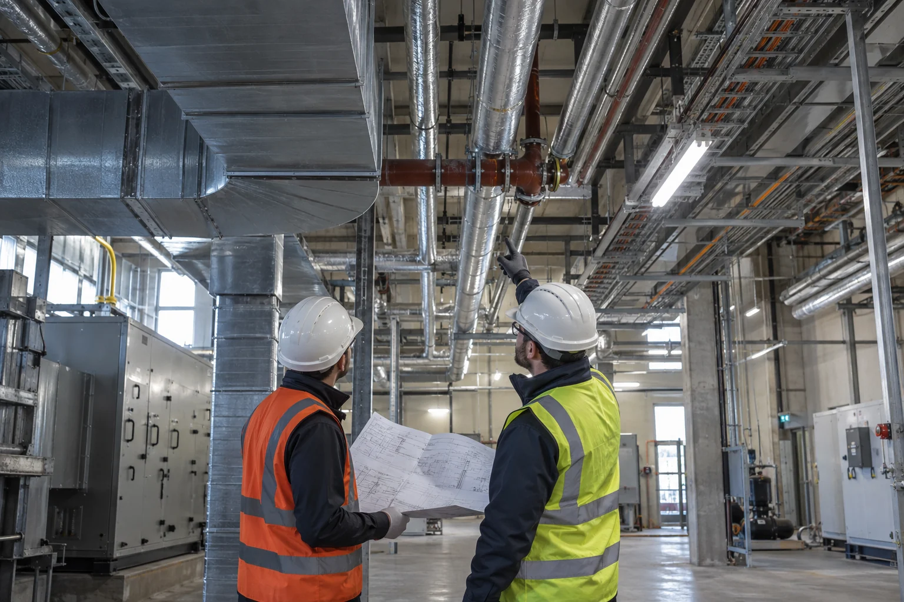
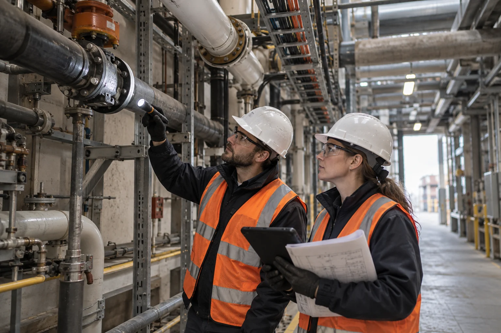
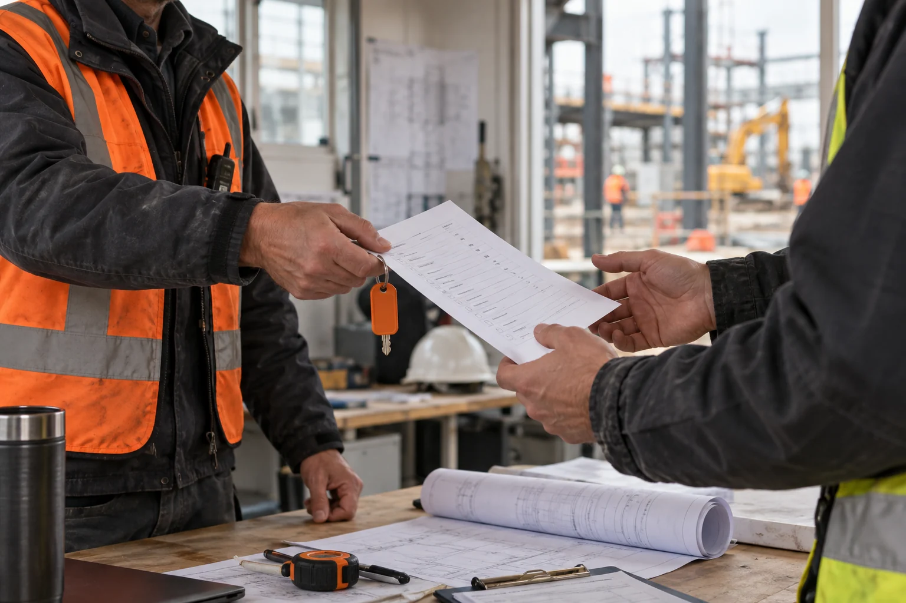
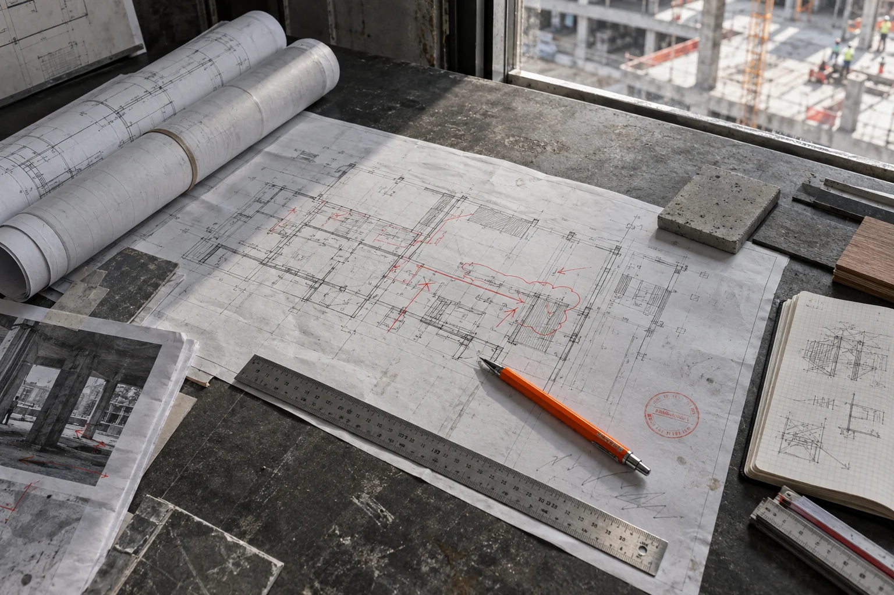
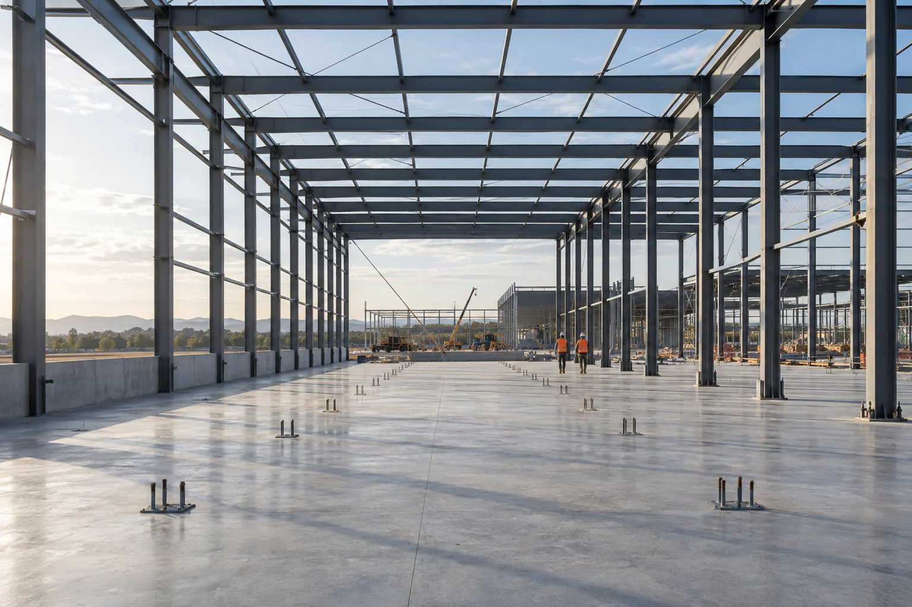

Согласованные инженерные системы
Трассы, мощности и оборудование не конфликтуют со смежными разделами.
Проектируем, монтируем и запускаем инженерные системы промышленных и общественных объектов. Проверяем, как новые решения связаны с существующими сетями, технологией здания и дальнейшей эксплуатацией.

Вентиляцию, электроснабжение, водоснабжение, автоматику и другие системы нельзя проектировать отдельно друг от друга. Проверяем трассы, мощности, точки подключения и доступ к оборудованию. Решение должно помещаться в объекте физически и оставаться доступным после ввода.

На действующем объекте сначала смотрим фактические трассы, мощности и режим работы оборудования. После этого определяем точки подключения и порядок переключений. Если для монтажа нужна остановка участка, она должна появиться в графике раньше, чем бригада выйдет на площадку.
После монтажа система ещё не считается готовой. Проверяем комплектность, настройки оборудования и работу в предусмотренных режимах. Замечания закрываются до передачи, а заказчик получает документацию, которая понадобится при эксплуатации и обслуживании.
Трассы, мощности и оборудование не конфликтуют со смежными разделами.

Точки подключения и переключения определены до начала монтажа.

Системы проходят настройку и проверку в предусмотренных режимах.

Заказчик получает материалы, необходимые для дальнейшего обслуживания.
В зависимости от задачи это обследование, проектирование, подбор и монтаж оборудования, настройка, пусконаладка и передача исполнительной документации.
Да, после обследования существующих сетей и определения точек подключения. Очерёдность работ и временные переключения фиксируются до монтажа.
Проверку монтажа, настройку оборудования и автоматики, пробные режимы и фиксацию замечаний. Состав зависит от конкретной системы и проектных требований.
Да. Работы планируются по доступным окнам и зонам, с учётом непрерывности процессов и требований безопасности площадки.
Состав зависит от системы: исполнительные схемы, паспорта и инструкции оборудования, протоколы проверки и материалы пусконаладки.
От количества систем, состояния существующих сетей, состава проектирования и сложности монтажа. Стоимость уточняется после исходного обследования.
Что собрать перед обследованием и проектированием: исходные документы, ограничения на объекте и вопросы подрядчику.
Можно заполнить от руки и передать коллегам. Если каких-то данных нет, отметьте это и обсудите с исполнителем.
Позвоните 8 (8442) 56-45-54 или подготовьте письмо через форму. Для отправки откроется ваша почтовая программа.